RStudio setup per git
Va detto ad RStudio dove si trova l’eseguibile di Git
- Naviga nell’IDE di RStudio su
Tools > Global Options
- Clicca su
Git/SVN.

RStudio setup per git
Spunta " Enable version control interface for RStudio projects " e specifica il path all’eseguibile di Git che hai appena installato.
Se non sai dov’è l’installazione di Git vai da terminale ed esegui where git (per utenti Win).
Il percorso dovrebbe assomigliare a qualcosa come: C:/Program Files (x86)/Git/bin/git.exe
Git & RStudio setup: la configurazione git
- Vai su
Tools > Shell per aprire la shell di Git
- Di’ a Git le tue credenziali Github (!) username & GitHub email:

Git & RStudio setup: la configurazione git
- Vai su
Tools > Shell per aprire la shell di Git
- Di’ a Git le tue credenziali Github (!) username & GitHub email:
Nella shell, scrivi i seguenti due comandi:
git config --global user.email "my.name@inbo.be"
git config --global user.name "mygithubusername"
Assicurati di utilizzare il tuo username di GitHub!
Clona una repo per lavorare in Locale
- Copia l’indirizzo HTTPS della repo (tasto code)
File > New Project..., select Version Control, choose Git- Provide the repository HTTPS link, select desired directory
- Copia l’indirizzo HTTPS
Naviga all’indirizzo della cartella che vuoi copiare e premi sul tasto code
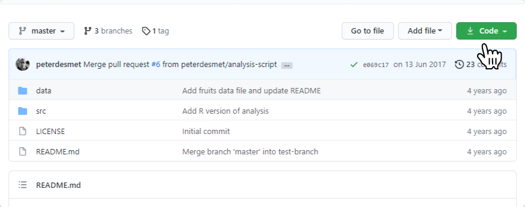
File > New Project..., select Version Control, choose Git
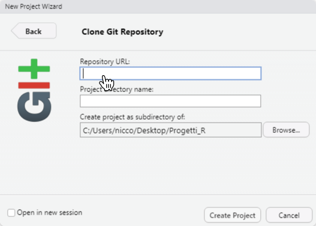
- Provide the repository HTTPS link, select desired directory
Incolla l’indirizzo in Repository URL. Cambia il nome del progetto se vuoi. Premi su create Project.
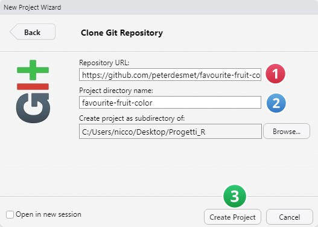
.gitignore
- RStudio aggingerà sempre un
.gitignore se questo non esiste già.
- Vai al pane
git, clicca cok tasto destro sul file .Proj e seleziona Ìgnore
- Aggiorna
.gitignore e clicca su Save.


Fai un commit
- Aggiorna il
README.md
- Vai sul
git pane, spuntando .gitignore
- Clicca su commit.
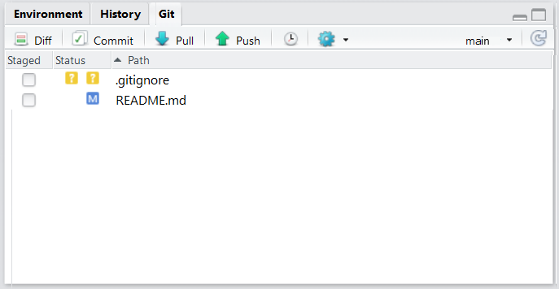
Fai il commit
- Aggiungi un messaggio di commit, in questo caso “add .gitignore”
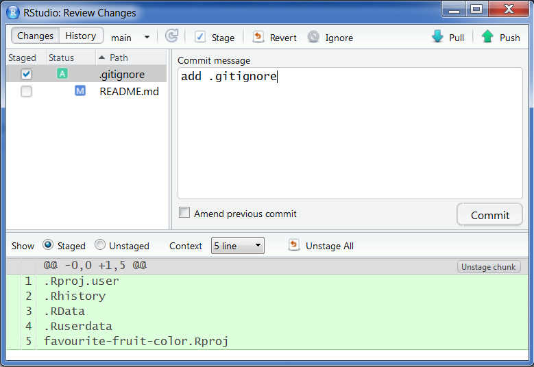
Fai il commit
- Clicca su
Close
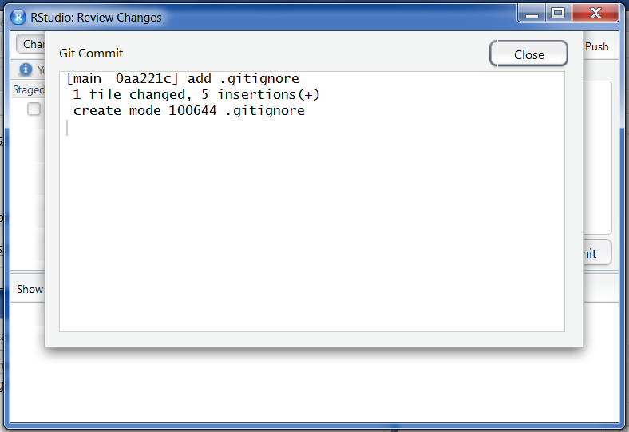
Fai il commit
- Adesso spunta la casella accanto
README.md
- Aggiungi nuovamente un messaggio di commit e clicca su Commit
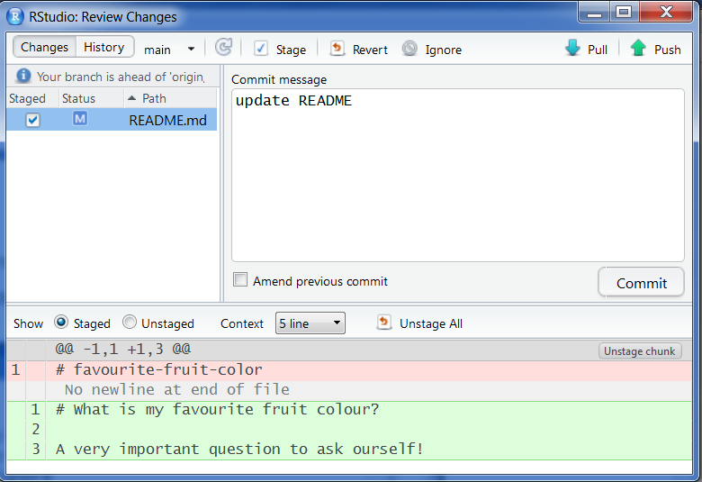
Push dei cambiamenti su GitHub
- Nota che il
git pane ti avverte che: your branch is ahead of ‘origin/master’ by 2 commits (cioè rispetto alla repo su GitHub la repo locale ha due cambiamenti in più)
- Clicca su
push nel git pane

Vai sulla tua repo di GitHub e verifica!
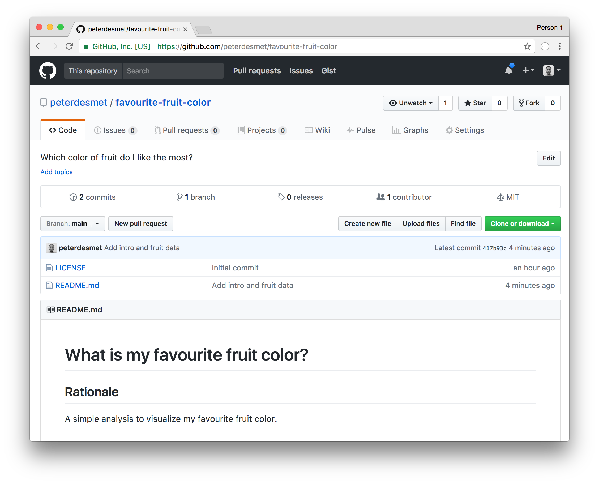
Metti in sicurezza le tue credenziali (con HTTPS)
- Clicca su
more nel git pane e seleziona shell
- Scrivi
git config --global credential.helper store
- Scrivi
exit per abbandonare la shell
- La prossima volta che
git avrà bisogno delle tue credenziali te le chiederà solo una volta
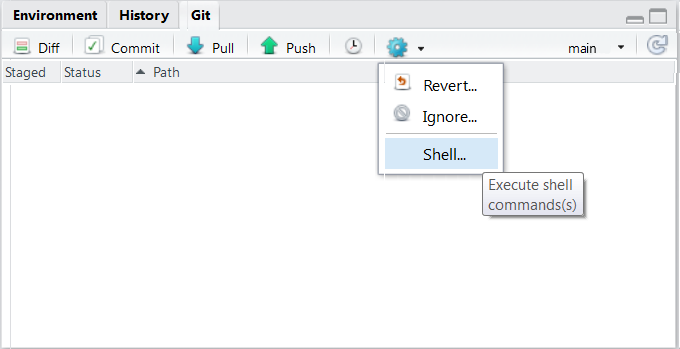
Crea un commit logico
- Fai 2 cambiamenti casuali sul
README.md in locale
- Crea 1 commit per ogni cambiamento.
- NON pushare i commit (non ancora)
Crea un commit logico
- Clicca su
Commit nel git pane
- Clicca sul
README.md
- Seleziona i cambiamenti che vuoi committare, successivamente clicca su
stage selection (in blu)
- Aggiungi un
commit message e clicca su Commit
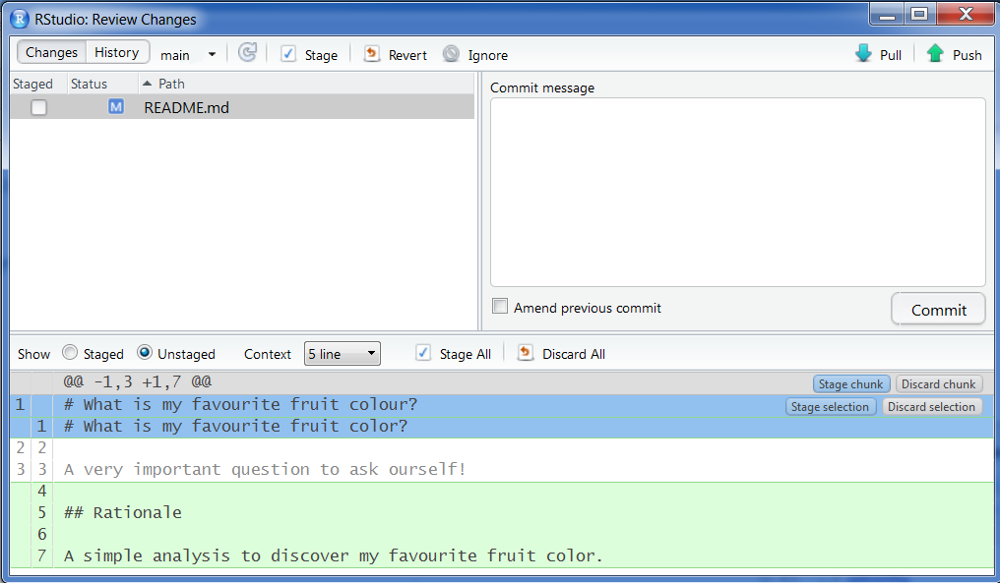
Crea un commit logico
stage xyz: aggiungi xyz dal commitunstage xyz: rimuovi xyz dal commitdiscard xyz: revert (ritorna indietro) rispetto ai cambiamenti su xyz ( ⚠️ stai attento, questo non può essere riportato indietro! ⚠️ )
E xyz può essere:
- una
linea singola
- una
selezione di linee
- un
chunk di codice
- RStudio si occuperà di spezzare i cambiamenti in più chunks
- I chunks sono definiti come 10 linee di codice non cambiate tra gli effettivi cambiamenti
Crea un Conflitto ⚔️
Aggiorna il README.md direttamente da GitHub,
su unq qualsiasi linea, sulla stessa cambia qualcosa nella medesima riga, ma in Locale.
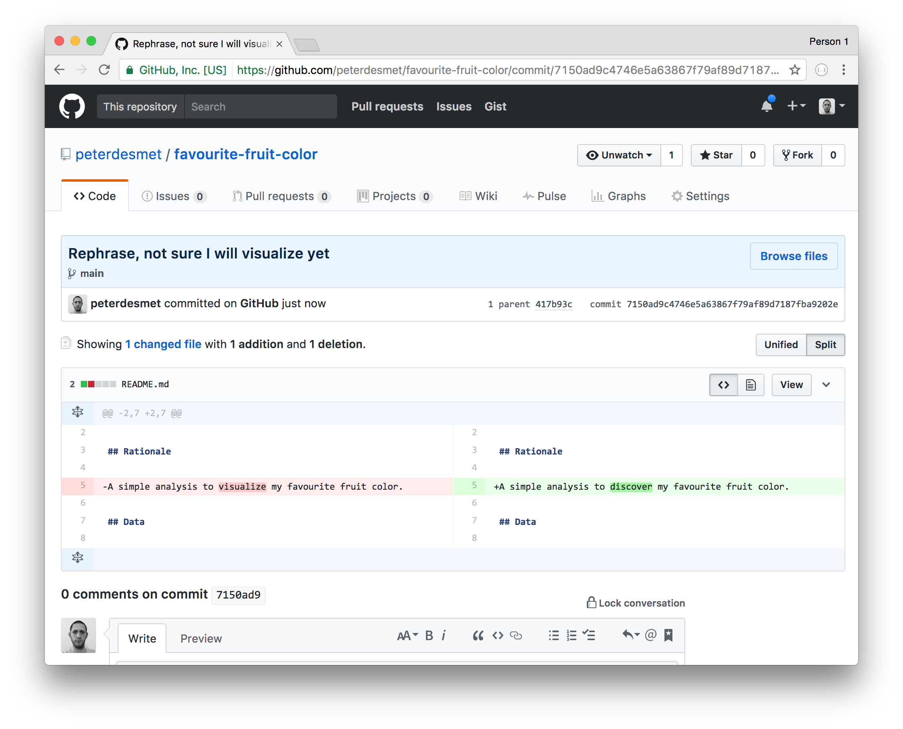
Ecco il Conflitto!
Prova a fare Push (cliccando su push) ai tuoi cambiamenti locali.

Risolvi il conflitto 🕊
- Clicca
Pull per tirare dentro i cambiamenti.
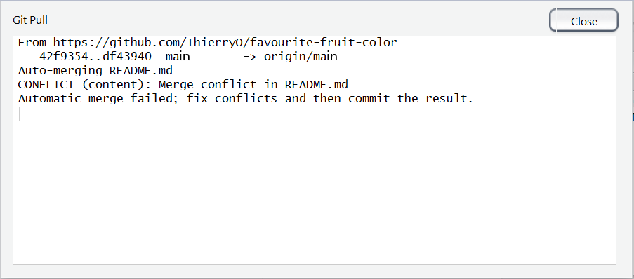
Risolvi il conflitto 🕊
Apri README.md in RStudio: (il conflitto è generato da due parole diverse visualize VS discover)
<<<<<<< HEAD
A simple analysis to visualize my favourite fruit colour.
=======
A simple analysis to discover my favourite fruit color.
>>>>>>> origin/master
Scegli quale vuoi tenere:
A simple analysis to discover my favourite fruit colour.
Committa e clicca su push
Aggiungi un File
- Agiungi un
fruits.csv file in /data
- Aggiungi un link al file su
README.md (sintassi di Markdown)
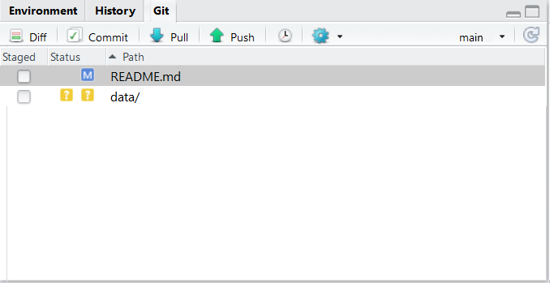
Aggiungi un file within attraverso una directory
- Mettere in stage una directory metterà in stage tutti files nella directory
- Non puoi mettere in stage directory vuote
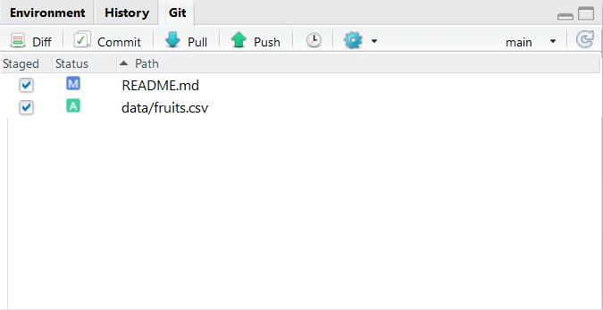
Adatta l’ultimo commit
- Attenzione: NON fare questo su commit che sono già stati pushati, altrimenti andrai incontro ad un inevitabile conflitto
- Fai un cambiamenti in
fruits.csv
Commit come sempre, ma questa volta spunta amend previous commit sotto il commit box!
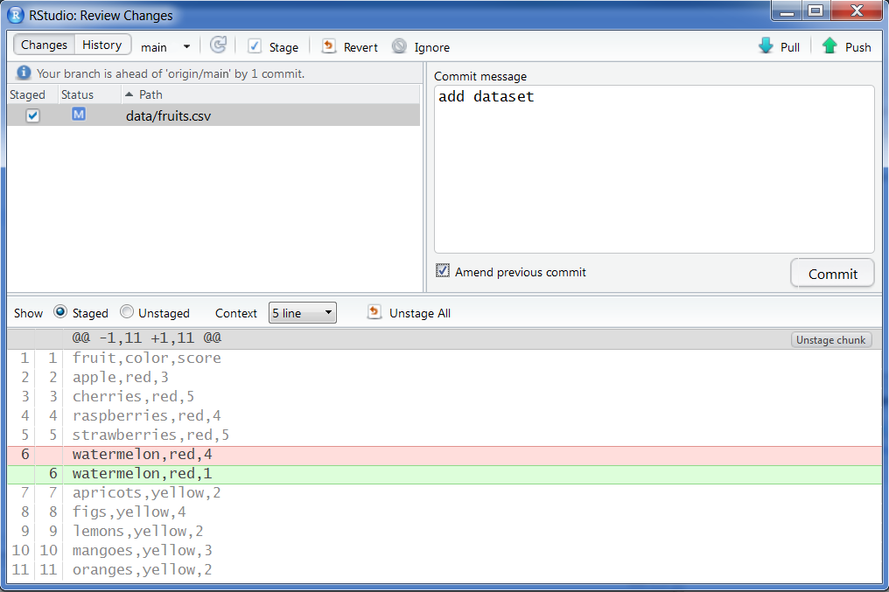
Guarda la history
- Clicca su
history nel git pane 
Crea un nuovo branch per sperimentare
- Crea un NUOVO branch
- Aggiungi un “analysis file” nella cartella
/src
- Commit
- Cambia (Switch) tra un ramo e l’altro
Crea un nuovo branch per sperimentare
Apri la git shel
Crea un branch attraverso il checkout di un nuovo branch, qìuindi scrivi il seguente sulla shell, assegna il nome che vuoi al posto di analysis-script.
git checkout -b analysis-script
Genera una panoramica dei branches attivi con: git branch sempre su shell

Effetti di un cambiamento di branch
Aggiungi un file alla repo nella cartella src-directory (ricordati prima)
- Premi sullo status del nuovo branch (nell’esempio
analysis-script), poi ritorna indietro allo status al master branch, selezionando (LOCAL BRANCHES) -> master
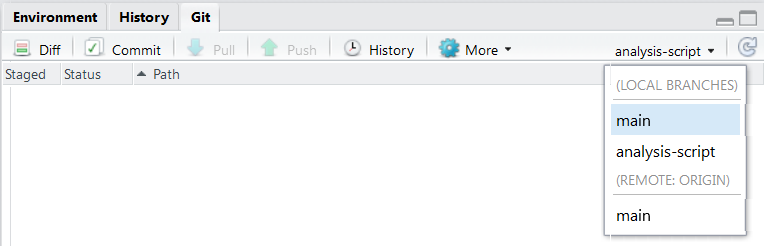
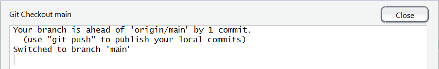
Effetti di un cambiamento di branch
- Verifica la struttura delle tue cartelle, dove sono andati a finire i files che hai aggiunto?
- Fai l’operazione opposta a quella di prima, ritorna sul branch
analysis-script
- RIverifica ancora la struttura della tua cartella, e adesso ci sono i files che hai aggiunto?
Prima push sul nuovo branch
- Nota
pull and push che si sono git disattivati, sul nuovo branch
- Apri la shell
- Scrivi
git push -u origin analysis-script
Questo attiverà i pulsanti pull and push sul nuovo branch!

Crea una Pull Request (PR) per includere il tuo lavor
- Clicca su
push
- Nella Github, naviga sulla tua repo…
- Crea una
pull request
Crea una Pull Request (PR)

Crea una Pull Request (PR)

Review the PR

Review the PR
- Rivedi i cambiamenti
- Se vanno bene, unisci (merge) della PR
- Cancella il branch di sperimentazione
Include i cambiamenti nel master in locale
- Switch sul
master branch
- Clicca
pull.

Escludi files
- in ogni lunguaggio di programmazione ci sono dei files che sono dei derivati di altri, (fanno da stampella per la creazione)
- Informazioni sensibili (passwords, tokens…)
- cartelle con file pesanti che non devono essere inclusi nella history
- i temp/ o gli /example_1.R
.gitignore qui ci aiuta!
Escludi i files

Ricorda che puoi usare dei caratteri speciali detti Wildcards come *.Rproj per escludere tutti i files con la stessa estensione, suffisso o prefisso (SQL like)